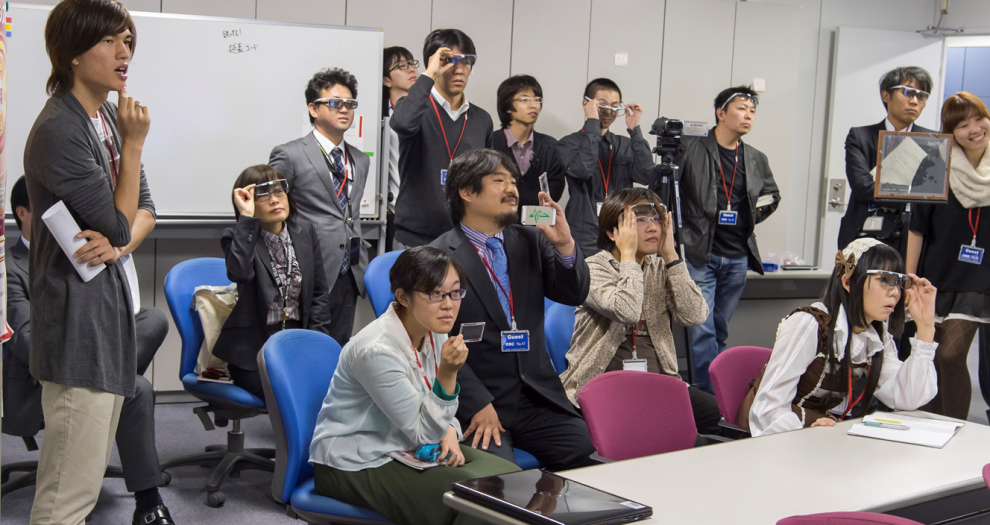
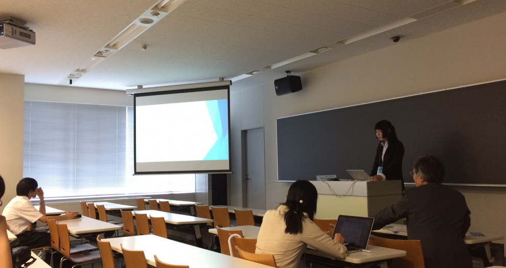

shirai
-
shirai wrote a new post, 「白井研究室通信」 第46号(2016/2/18発行)／多重化技術 ExField 発表・3/1にTEPIAにて成果発表会を開催, on the site Shirai Lab 4年 2か月前
45号から1年ぶりのご無沙汰です。白井研究室通信 第46号をお届けます。
■ 2015年度の卒業研究も以下のようなテーマで無事発表を終えました。
森 拓也：「ミュージアムのための多重化サイネージシステムの提案」
鈴木 百合彩：「Augmented TV における年齢推定方式の開発と評価」
津田 良太郎：「笑顔認識技術を利用したエンタテイメント体験の客観評価手法」
中澤 遥：「新し[…] -
shirai wrote a new post, 2016年度白井研究室2次配属について, on the site Shirai Lab 4年 2か月前
本年度の2次配属について最大1名程度の採用可能性がありますが，希望者多数のため，以下の課題を設定します．
メールにて面談日程をご調整の上，ご準備ください（今週4/4～8は主に605室に在室です）．
まず以下のURLを読んでください
【ディプロマ・ポリシー】（情報メディア学科卒業に必要な要素(1)～(5)）【白井研究室，論文リスト】
自分の卒業研究のテーマについて，以下の要素を含めて計画をレポートしてくだ[…]
-
shirai wrote a new post, ワールドビジネスサテライト「トレたま」で研究成果が報道されました, on the site Shirai Lab 4年 3か月前
以下の番組で報道されました。
テレビ東京「ワールドビジネスサテライト」2016年2月24日放映
【トレンドたまご】角度で見え方変わるディスプレーなお、今回の番組で紹介された多重化技術「ExField」は、白井研究室の研究成果発表会「エンタテイメントシステム工学研究会」で口頭発表＆デモ展示いたします。
※映像の使用は許可を申請しています

-
shirai wrote a new post, 多重化技術「ExField」を発表, on the site Shirai Lab 4年 3か月前
2016年2月19日付、 神奈川工科大学および株式会社富士通ソーシアルサイエンスラボラリより共同プレスリリースを発信いたします。
神奈川工科大学が “どこから見ても正面に見える”
広告向けディスプレイ技術を開発 ‐‐ ARや多言語表示に期待
～ 富士通SSLと実用化に向けた共同研究を推進 ～神奈川工科大学情報学部情報メディア学科の谷中一寿教授、白井暁彦准教授らはこのたび、映像を複数の視点[…]

-
shirai wrote a new post, 虚構新聞が多重化技術を紹介、あわや「誤報」に。, on the site Shirai Lab 4年 4か月前
アインシュタインがその存在を予言した「重力波」が100年の時を超えて現実に観測された2016年2月12日、虚構報道界の大手メディアである「虚構新聞」が多重化技術を使ったニュース番組を虚構として報道し、あわや「誤報」となる事態に。
■テレビ報道の中立性、２色化で対応 「停波」発言受け
民間放送各社は、ニュース番組の報道内容が政府見解と異なる場合、テロップを赤と青の２色で重ね合わせて同時に放送する「２色テロ[…]

-
shirai wrote a new post, 2016/3/1研究成果発表会「エンタテイメントシステム工学研究会」開催, on the site Shirai Lab 4年 4か月前
平素は、格別のお引き立てを賜りありがとうございます。
さて、この度、白井研究室の科研費研究成果発表と共同研究を行っている企業の取り組みを紹介する研究会「エン[…]
-
shirai wrote a new post, 2016年度 白井研究室 卒研配属希望者 募集中, on the site Shirai Lab 4年 6か月前
募集日程
個人別志願調査票の配布 12月15日(火)
一次募集応募期間 12月18日(金)～25日(金)15時30分（締め切り厳守）
一次募集卒研配属決定 2016年1月15日(金)（予定）
二次募集 詳細は4月の新年度ガイダンスの専門科履修案内において発表今年は配属スケジュールが1ヶ月ぐらい後ろ倒しになっておりますね。
昨今はどの大学でも1-3年 […]
-
shirai wrote a new post, 白井研究室カレンダー2016完成！新4年生に引き継がれる研究室の暦…。, on the site Shirai Lab 4年 6か月前
白井研究室カレンダー2016が完成しました！
表紙はニコニコ超会議2015「ニコニコ学会β」での金賞受賞の写真ですね。
なお、各月のキャッチコピー（標語？）は以下のようになっております。
1月・・・一年の計は元旦に有り/一生の計は少壮の時に有り
2月・・・4年生は卒業・3年生は豆まきの時期
3月・・・ログインボーナスで研究室の座席を手に入れろ！！
4月・・・新学期！忙しさに負けずに元気出していこう […]
-
shirai wrote a new post, 【忘年会】2015年度最終ゼミ＆忘年会＆配属希望者相談会 開催のお知らせ, on the site Shirai Lab 4年 6か月前
【白井研究室配属希望者向け お知らせ】
12/24に本年度最終ゼミ＆忘年会＆配属希望者相談会（新人歓迎会）を開催することになりました。
参加希望者はFacebook上「白井研究室」でご登録くださいね。詳細は追ってこちらに掲載します。
主に学内向けですが、OB・社会人のご参加、差し入れなども歓迎です。
-
shirai wrote a new post, DeNA主催 ゲーム関連就職イベント「HEAT3rd渋谷」に参加します, on the site Shirai Lab 4年 6か月前
DeNA主催ゲーム関連就職イベント「HEAT3rd渋谷」に参加します
〔公式情報〕学内向け：ゲーム業界希望者は学年に限らず遠慮なく参加してください
上記URLからエントリーを済ませ，12/4(金) 12/5(土)5限 K1-502で開催する学内参加者説明会およびFacebookグループ「Shirai.Job.Lab」に参加すること．
（非公開グループにつきURLは学内に掲示します，参加にあたっては学内者 […]
-
shirai wrote a new post, 第5回(11//11)やったこと＆課題, on the site 白井研セミナー 4年 7か月前
第5回(11//11)やったこと
・言語化する、空気に消さない
・名刺作りでわかること、実際に手を動かさないとわからないこと。
・紙のフォーマットとソフトのフォーマットの違いを体感する
・自分にとって何が難しいのかを理解する
・レイアウト理論
・デザインにおけるコンセプト
・普通のSEってなに？
・自分に関係がある”システム”を探ってみる
・知識を言語化することで他人に伝える
・名刺の渡し方
・運と縁 […] -
shirai wrote a new post, DCEXPO2015日本科学未来館で新作を公開(10/22～25), on the site Shirai Lab 4年 8か月前
2015年10月22～25日に日本科学未来館で開催される「デジタルコンテンツエキスポ」(DCEXPO2015)・フランス Laval Virtualブース(C04)にて白井研究室から「新作」を公開予定です。
現時点で公開できる情報はこちらに掲載していきたいと思います。
・Ma […]  -
shirai wrote a new post, 講演お知らせ「非ゲーム分野でのゲームエンジンの活用」, on the site Shirai Lab 4年 8か月前
白井先生が多重化技術について、画像電子学会（IIEEJ）の一般向けセミナーで講演します。
第４回 画像エンタテイメント(IET)セミナー「非ゲーム分野でのゲームエンジンの活用」
PDF: https://fb.me/7ETfTmrqO
申し込みURL：（以 […]

-
shirai wrote a new post, エンタテイメントコンピューティング2015で5件の研究発表, on the site Shirai Lab 4年 8か月前
「エンタテインメントコンピューティング2015」（主催：情報処理学会 エンタテインメントコンピューティング研究会(SIG-EC)）にて以下の発表を行いました。
会期: 2015/9/2 […]

-
shirai wrote a new post, 2015年度 白井研究室 卒業研究 中間発表会開催, on the site Shirai Lab 4年 9か月前
主に学内、特に情報メディア学科3年生向けのお知らせです。
2015年9月18日 […]  -
shirai wrote a new post, 第20回 日本VR学会大会にて5件の研究発表, on the site Shirai Lab 4年 9か月前
2015年9月9〜11日に芝浦工業大学にて開催される第20回日本バーチャルリアリティ学会大会にて以下の5件の発表を予定しております。
発表予定のタイトル：
超人スポーツのためのボクシングトレーニングツールの開発
○岡本 遼, 松澤 孟, 白井 暁彦(神奈川工科大学)
9/9 11:15-12:45 12D アート&エンタテインメント1 座長:渡邊 淳司 […]
-
shirai wrote a new post, SIGGRAPH 2015にて3件の発表を行います, on the site Shirai Lab 4年 10か月前
2015年夏もついに前期講義が終わり、アメリカ・ロサンゼルスから夏のご挨拶です。
今年も上半期、大変お世話になりました！
ロサンゼルスにて開催される世界最大のＣＧ・インタラクティブ技術の国際会議「ACM SIGGRAPH」ですが、
白井先生＆白井研究室からは以下の3件の発表を行います。以下時系列で紹介。
[Birds of a Feather] International Collegiate […]
-
shirai wrote a new post, 共同プレスリリース：TEPIA 先端技術館に多重化・不可視映像技術「ExPixel」を常設展示, on the site Shirai Lab 4年 10か月前
2015年8月4日、富士通SSL社との共同プレスリリースを発信いたしました。以下再掲いたします。
SIGGRAPH ASIA 2015 神戸での展示発表についてもこちらで公開させていただきます！
「TEPIA 先端技術館に多重化・不可視映像技術「ExPixel」を常設展示」
～神奈川工科大学 白井暁彦准教授と共同で実用化を進める多重化・不可視映像技術「ExPixel」をTEPIA […]
-
shirai wrote a new post, 2015年度3年前期セミナー終了！, on the site Shirai Lab 4年 10か月前
白井研究室3年セミナーが無事終了しました。
3年生向けに「エンタテイメントVR」をテーマに
・IVRC（国際学生対抗VRコンテスト）へのチャレンジ
・DeNA社のマッチングイベント「HEAT渋谷」への参加
・ニコニコ超会議2015への参加＆受賞
・IVR展にスーツ着て参戦
・コンテンツ東京も見学
・各自研究テーマを見つけて3週間で取り組み（Unityによるキャラクターアニメー […]

-
shirai wrote a new post, 世界最大級マンガイベント「台湾漫画博覧会」でコラボ, on the site Shirai Lab 4年 10か月前
2015年8月6～11日に台湾・台北世界貿易中心展覽一館にて開催される、世界最大級のマンガイベント「台湾漫画博覧会2015」において、Manga Generatorが、台湾の人気漫画「冒險少年浩平」（ホッピン＆ジョーンズ／Hoping & […]

- もっと読み込む